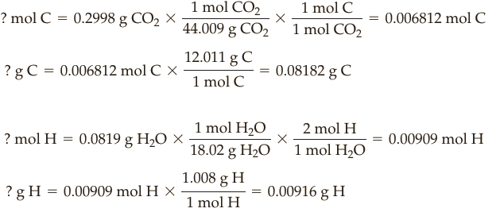
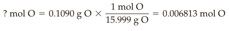

Determinare la formula minima della Vitamina C sapendo che la combustione di 0.2000 g del composto hanno originato 0.2998 g CO2 e 0.0819 g di H2O.
Soluzione.A segutio della combustione tutto il carbonio del composto finisce nell'anidride carbonica e tutto l'H nell'acqua. Determiniamo le moli e la massa di C e H, nel composto partendo dalle mase di C e H in CO2 e nell'H2O:

Per differenza si ottiene la massa di O presente nel campione di Vitamina C:
Moltiplicando le masse degli elementi per 100%, si ottiene la percentuale in massa:
Le moli di O nel composto sono:

Possiamo scrivere una prima formula empirica come:
dividendo per il più piccolo pedice otteniamo: CH1.33O.
Moltiplicando per 3 otteniamo la formula minima definitiva: C3H4O3.